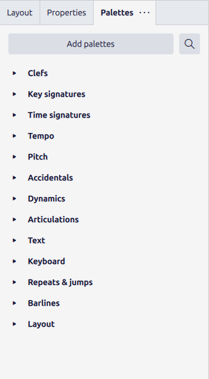
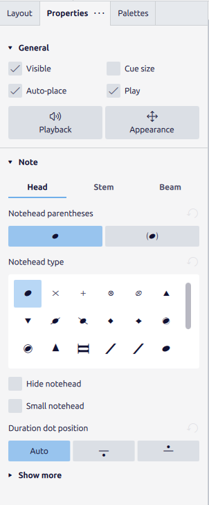
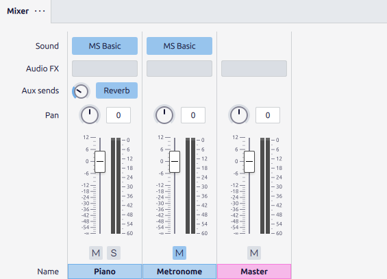
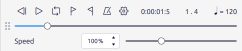

You can now get notes onto a staff. Everything else MuseScore does — adding a key signature, softening a phrase, choosing a sound, pressing play — happens through four surfaces docked around the score. Learn where each lives and what it is for, and the program stops being a wall of buttons and becomes four drawers you open as needed. This chapter opens each one.
3.1Palettes: the catalogue of symbols
Music notation has a large vocabulary of symbols — clefs, key and time signatures, dynamics, articulations, repeat barlines, tempo marks — and the Palettes panel is where they all live, sorted into labelled drawers. Show it with F9 (or View ▸ Palettes).

The workflow is always the same two steps: select the target in the score, then double-click the symbol in the palette. Select a note and double-click a forte from Dynamics and the marking attaches to that note; select a measure and double-click a time signature and it takes effect there. If a drawer you need is missing, the search field at the top of Figure 3.1 finds any symbol by name and drops it in — faster, once you know a symbol’s name, than hunting through the drawers.
3.2Properties: adjusting what you selected
Where a palette adds things, the Properties panel adjusts the thing you have already selected. Click a note and open Properties (it shares the left dock with Palettes — click its tab, or View ▸ Properties), and the panel fills with every attribute of that note.

The panel is entirely context-sensitive — it always reflects the current selection, so it looks different depending on what you have clicked. Select a barline and it offers barline types; select a bit of text and it offers font controls. You will not need most of what Figure 3.2 shows for a long while, and that is fine: Properties is a panel you reach into when you want to change one specific thing, not one you keep memorized. Knowing it exists, and that it follows your selection, is enough for now.
3.3The Mixer: choosing and balancing sounds
Playback needs sounds, and the Mixer is where each staff is assigned an instrument and balanced against the others. Open it with F10 (or View ▸ Mixer).

Two controls in Figure 3.3 earn their keep early. Mute (M) and Solo (S) let you isolate one staff — solo the bass line to check it alone, or mute the melody to hear the accompaniment underneath. That is how you audit a texture rather than just play it. The Sound slot is the other: click it to swap MuseScore’s basic sounds for the richer MuseSounds instruments if you have downloaded them. Volume and pan you can leave at their defaults until you are arranging for more than one instrument, in Part 5.
3.4Playback: hearing the score
The point of all of it is to hear the music, and the playback toolbar — up in the top toolbar row, always visible — is the transport.

The one key to keep under a finger is Space — it starts and stops playback from wherever you last clicked, no toolbar needed. Playback begins at the current selection, so click a note to start there, or press Ctrl+Home to jump to the top first. The metronome toggle in Figure 3.4 adds an audible click, invaluable when you are checking a tricky rhythm, and the Speed slider slows a fast passage down so you can hear whether it actually works — both are switched off in the final result but on constantly while you compose.
3.5The four drawers
That is the whole console. Adding a symbol is Palettes; adjusting a selected object is Properties; assigning and balancing sounds is the Mixer; hearing the result is playback. Every instruction later in this book that begins “open the Dynamics palette” or “solo the cello” or “press play” is pointing at one of these four surfaces you have now met. From here on the book will name them without re-explaining them — so if a step ever refers to a panel you have lost, this chapter is the map back.